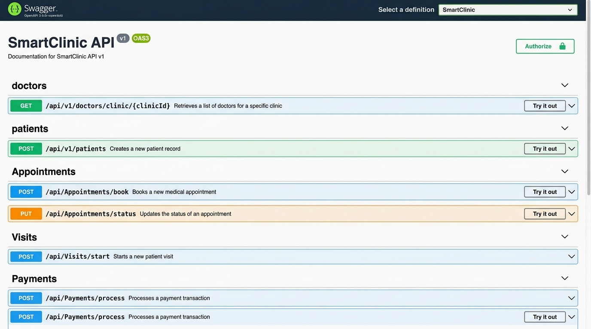
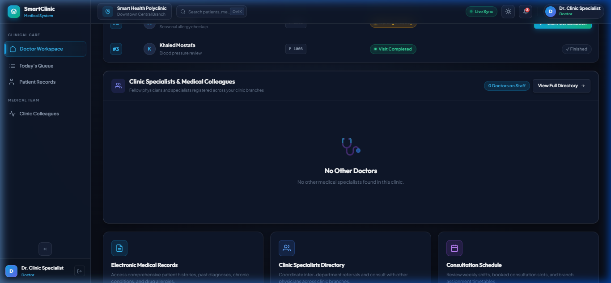
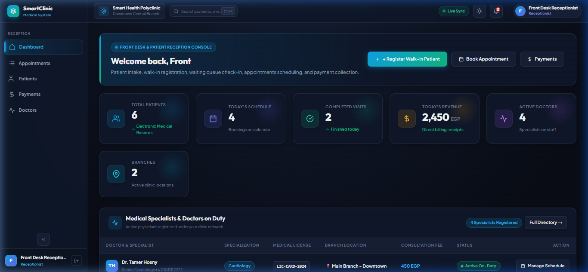
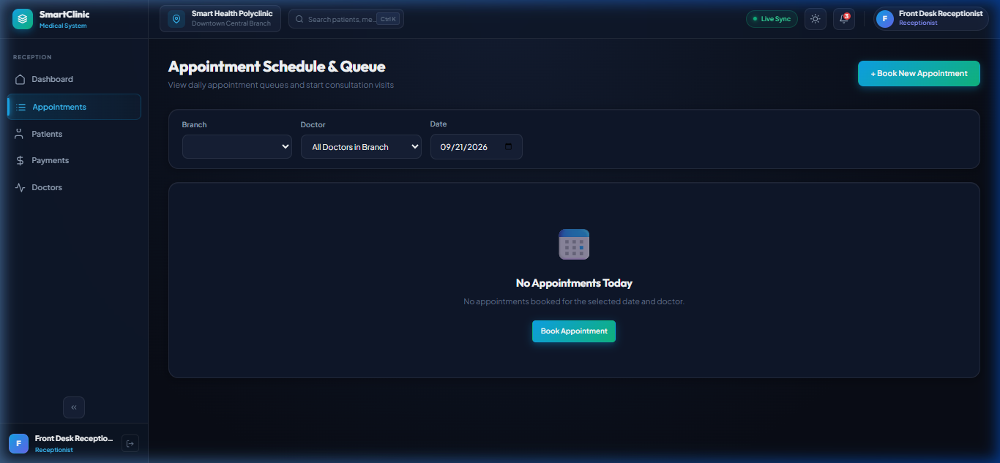
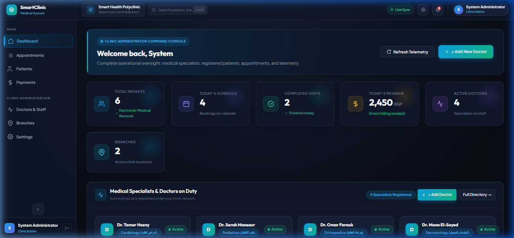
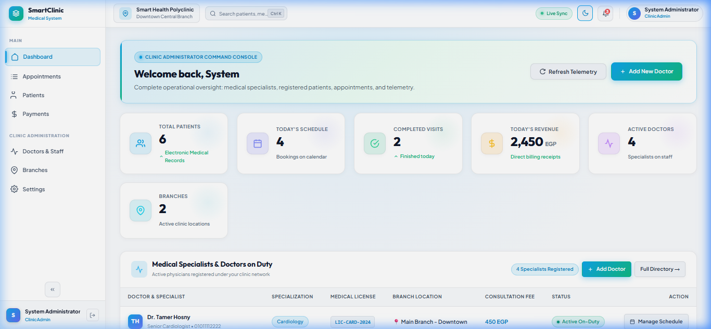

SmartClinic
A Cloud-Native, Multi-Tenant Healthcare Management Platform Built on Clean Architecture, CQRS with MediatR, and High-Performance Angular 19 Standalone Signals.
Bridging Clinical Excellence with Modern Software Engineering
Traditional outpatient clinics and multi-specialty polyclinics face debilitating bottlenecks that harm both patient care and operational revenue.
-
✕
Fragmented Paper Records: Medical histories and handwritten prescriptions are lost, illegible, or inaccessible across branches.
-
✕
Reception & Queue Chaos: Unsynchronized appointments cause long wait times, missed follow-ups, and frustrated patients.
-
✕
Revenue Leakage & No Auditing: Cash collections without atomic transaction receipts lead to financial discrepancies.
-
✕
Siloed Multi-Branch Operations: Inability to centrally govern doctors working across multiple geographic clinics.
-
✓
Multi-Tenant SaaS Foundation: Complete cryptographic and logical isolation between tenant clinics with multi-branch management.
-
✓
Integrated EMR & Digital Prescriptions: Lifetime electronic medical records with allergy alerts and structured digital dosages.
-
✓
Real-Time Live Queue Tracking: Automated status transitions from Reserved ➔ Waiting ➔ InConsultation ➔ Completed.
-
✓
Automated Billing & Analytical KPIs: Atomic financial ledger generating itemized invoices and live clinic revenue statistics.
Clean Architecture (Onion Pattern) Decomposition
Strict separation of concerns where core enterprise business logic remains completely independent of frameworks, databases, and external UI layers.
Outer layers depend strictly on inner abstractions. The Domain Layer has zero external dependencies or NuGet packages, ensuring maximum maintainability, portability, and isolated unit testing.
CQRS & MediatR Pipeline with Automatic FluentValidation
Decoupling write operations from read projections while enforcing self-validating requests before executing business handlers.
_mediator.Send(command) with zero fat controller code.ValidationException.Result<T> envelope indicating success status, messages, and payloads.Global Exception Handling & Automated Seeding Engine
Eliminating server crashes, standardizing RFC-compliant API error responses, and providing an autonomous database initialization engine.
Catches all unhandled exceptions globally, shielding the internal architecture and returning structured JSON problem specifications:
Integrated OpenAPI specification configured with JWT Bearer security scheme in Program.cs:
-
✓
Interactive Authorize Button in Swagger UI.
-
✓
Automated header injection:
Bearer <token>. -
✓
Root redirect: Browsing to
https://localhost:7006opens Swagger automatically.
Zero manual database setup required. On application boot, DbInitializer.cs orchestrates:
-
✓
Automated
MigrateAsync()schema deployment. -
✓
Seeds default tenant clinic: "Smart Clinic".
-
✓
Seeds multi-role matrix (Admin, 4 Doctors, Receptionist).
-
✓
Seeds realistic patient EMR records & allergies.
Multi-Tenant Scoping & Multi-Branch Hierarchy
Enabling independent medical practices to securely share computing resources while enforcing strict logical data separation and geographic branch governance.
SmartClinic implements a shared database with discriminator-based logical isolation, delivering cost-effective horizontal scale while guaranteeing data sovereignty.
ClinicId. All database operations filter through this tenant boundary.A single tenant clinic can operate across multiple physical facilities (e.g., Downtown Branch, Heliopolis Branch, New Cairo Branch):
Claims-Based JWT Security & Role-Based Access Control (RBAC)
Protecting sensitive health information (PHI) through cryptographically signed tokens and granular role-specific operational permissions.
Executive & System Administration
-
✓
Manage Branches & Specializations
-
✓
Register Doctors & Consultation Fees
-
✓
Live Analytics & Revenue Dashboard
-
✓
System Configuration & User Management
Healthcare Delivery & Diagnostics
-
✓
Personal Daily Appointment Queue
-
✓
Patient EMR Access (Allergies & History)
-
✓
Start Visit & Record Clinical Diagnoses
-
✓
Issue Digital Prescriptions (e-Rx)
Front Desk & Financial Settlement
-
✓
Patient Intake & Medical Code Generation
-
✓
Schedule & Coordinate Appointments
-
✓
Manage Waiting Room Queue Flow
-
✓
Collect Payments (Cash/Card) & Issue Receipts
Relational Entity-Relationship Model & EF Core 9
Fully normalized, ACID-compliant database architecture on Microsoft SQL Server with repository abstractions and atomic transaction units.
- Clinics: Multi-tenant root entity
- Branches: Physical clinic sites
- Users: System accounts & hashes
- Roles: RBAC authorization sets
- UserRoles: Many-to-many link
- Specializations: Medical fields
- Doctors: Physician credentials
- DoctorBranches: Assigned clinics
- DoctorSchedules: Shift days & times
- ConsultationFees: Pricing tiers
- Patients: Demographics & Code
- MedicalHistories: Chronic alerts
- Allergies: Critical safety flags
- Appointments: Booked slots & queue
- Visits: Clinical encounters
- Prescriptions: Issued e-Rx
- PrescriptionItems: Drug & dosage
- Payments: Financial receipts
- PaymentMethod: Cash, Card, Ins
- AuditTrail: CreatedBy & Dates
Angular 19 Standalone Architecture & Fine-Grained Signals
Building an ultra-fast, reactive SPA with zero NgModules, zoneless-ready change detection, and a custom dark glassmorphic design system.
Eliminates legacy NgModule boilerplate entirely. Each feature view is an autonomous component declaring its own imports:
-
✓
Faster tree-shaking & minimal bundle sizes.
-
✓
Lazy-loaded route segments for instant navigation.
-
✓
Isolated component-level styles and animations.
Replaces complex RxJS subscriptions with synchronous, glitch-free Angular Signals:
-
✓
currentUser = signal<User | null>for active auth. -
✓
isAdmin = computed(() => role === 'Admin'). -
✓
Fine-grained DOM updates without full-tree dirty checking.
State-of-the-art medical dashboard aesthetics crafted in pure SCSS:
-
✓
Deep slate & cyan medical color palette.
-
✓
Dark / Light theme toggle with CSS variable tokens.
-
✓
Responsive layouts matching desktop, tablet, and mobile.
The Complete Patient Lifecycle & Consultation Sequence
A synchronized sequence tracing patient intake, doctor examination, digital prescription delivery, and financial settlement.
P-1001).Modular Subsystems Powering Daily Healthcare Operations
Six cohesive business subsystems designed for maximum decoupling and maintainability.
Comprehensive search by name, phone, or medical code. Patient detail screen aggregates chronic diseases, past surgeries, and critical allergy alerts.
Doctor profiles mapped to medical specialties and assigned branches. Supports configurable consultation and follow-up fee structures.
Daily real-time waiting room queue display. Interactive actions to update patient progress from arrival to doctor summons in one click.
Integrated clinical prescription engine allowing physicians to add multiple medications with exact dosage, duration, and patient instructions.
Audit-ready financial collection workflow supporting cash and card payments with immediate payment receipt voucher generation.
Executive dashboard tracking total patients, active branches, active doctors, today's visits count, and today's total clinic revenue in EGP.
Three-Act Live Demonstration Strategy for Evaluators
A structured presentation script verifying cross-role operational coordination across live browser sessions.
admin@smartclinic.com / Admin@123
doctor@smartclinic.com / Doctor@123
receptionist@smartclinic.com / Reception@123
patient@smartclinic.com / Patient@123
Swagger OpenAPI 3.0 & Production User Interfaces
High-fidelity visual evidence of the running platform: Swagger RESTful API explorer and tailored multi-role interfaces.






Non-Functional Requirements & Engineering Benchmarks
Validating system performance, data integrity, and compliance with enterprise software engineering standards.
Optimized MediatR in-process dispatching, EF Core compiled queries with AsNoTracking() on read projections, and non-blocking async I/O.
Stateless JWT tokens enable horizontal scale-out across multiple container instances behind a load balancer with zero sticky session bottlenecks.
Database foreign key cascades and Unit of Work transactional boundaries ensure no clinical visit completes without verified payment records.
Strict nullable reference types, strongly typed CQRS DTOs, and clean build status: 0 Errors, 0 Warnings across the entire solution.
Anticipated Questions & Architectural Justifications
Direct, confident engineering rationale addressing complex design choices for evaluation professors.
Answer: Traditional 3-tier architectures tightly couple business rules to the database schema. Clean Architecture reverses this: the core domain is completely agnostic of EF Core or SQL Server. If we migrate to PostgreSQL or switch UI frameworks, the core business domain requires zero changes.
Answer: Two layers of defense: First, the CQRS CreateAppointmentCommandValidator queries active slots for overlaps before dispatch. Second, the database persistence layer enforces a unique composite index on (DoctorId, AppointmentDateTime), preventing race conditions at the database engine level.
Answer: Through authenticated JWT token claims. The ClinicId is extracted server-side from cryptographically signed claims by ICurrentUserService. Controllers and query handlers automatically filter repositories by this tenant scope, making client-side tampering impossible.
Answer: Angular Signals introduce fine-grained, synchronous reactivity directly into the Angular runtime. Unlike RxJS subscriptions, signals require no manual unsubscriptions (preventing memory leaks) and allow Angular to update exact DOM nodes without triggering full-tree Zone.js change detection.
Future Horizons & Concluding Remarks
Extending SmartClinic into a comprehensive national healthcare technology ecosystem.
Integrated real-time peer-to-peer encrypted video consultations, in-call chat, and remote vital monitoring directly in the doctor console.
Ambient AI clinical documentation transcription, automatic drug-allergy cross-checking, and intelligent diagnosis suggestions.
Standardized interoperability allowing seamless record transfer between hospital networks, diagnostic labs, and insurance payers.
SmartClinic is engineered with passion, precision, and adherence to modern enterprise software standards.